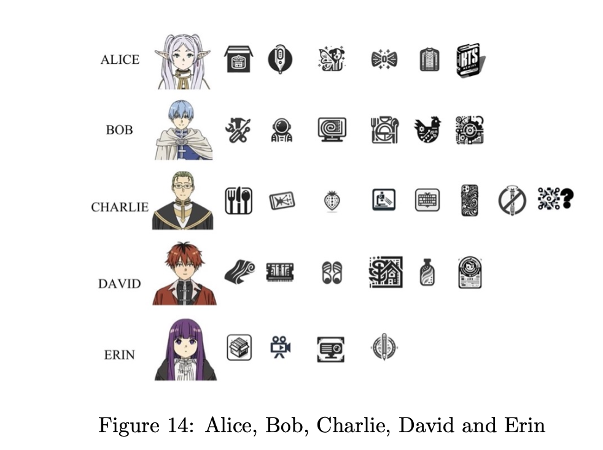

Just submitted the IMMC paper that we've been working on for the past four days. The topic is about how to distribute 30 goods to 5 people fairly base on their subjective value towards that good. The goods that are waiting to be distribute are very funny, including antique iPhone 17, automatic chicken counter and many more. But you know what's funnier, us!
The ultimate task for us is to generate a distribution of goods, we did have a somewhat complicated model and a great visualization that looks like this:
It looks nice, the problem is, we forget to include in the paper which icon represents which item!
Anyway, what is over is over, for the next few days, I will mainly work on volunteering, computational philosophy, machine learning, and physics. Good luck!